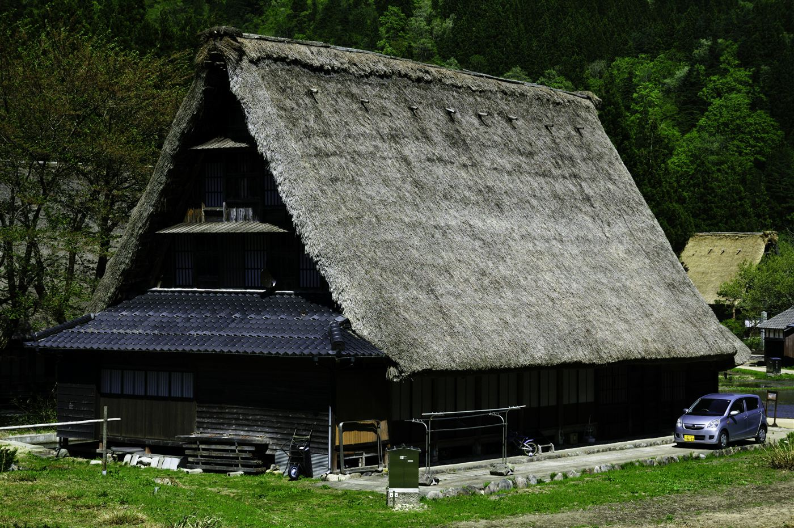
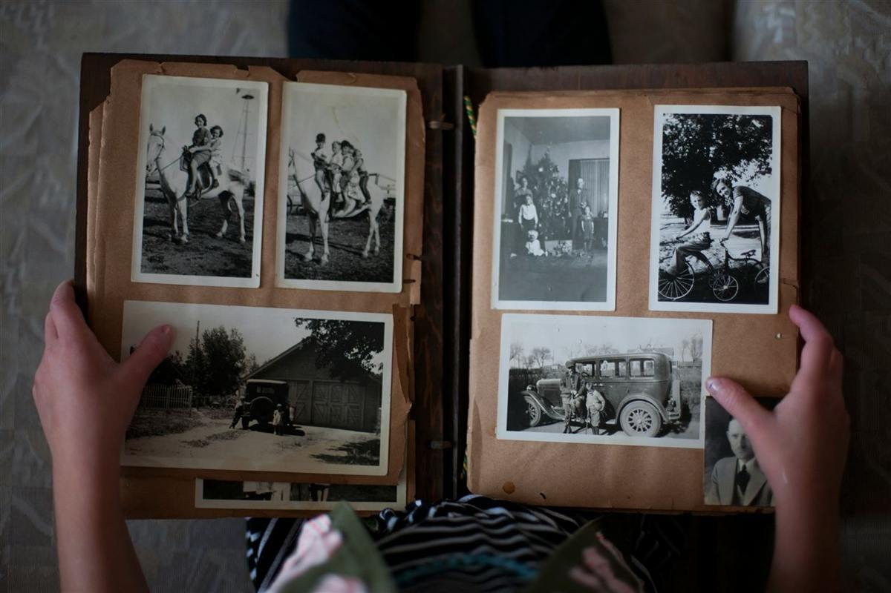

実家じまいとは？
進め方・費用相場・注意点をFPが体験談で解説
実家じまいは何から手をつければいいのか、費用はどれくらいかかるのか。進め方の6ステップと費用相場、そして陥りやすい後悔のパターンを、FPとして活動する筆者自身の体験を交えて解説します。

- 実家じまいの意味と、始めるべきタイミング
- 実家じまいの進め方（6ステップ）と費用相場
- 実際に経験して分かった、後悔しやすいポイント
実家じまいとは？「家じまい」との違い
実家じまいとは、親が住まなくなった実家を片付け、必要な手続きを経て処分・売却・活用するまでの一連のプロセスを指します。家財の片付けや不用品処分、遺品整理、仏壇の扱いに加え、相続登記や名義変更といった法的な手続きまで含む、範囲の広い作業です。
似た言葉に「家じまい」がありますが、これは所有者自身が元気なうちに自宅を整理・処分することを指します。実家じまいは主に、親が施設に入居したり、亡くなったりした後に子ども世代が行う点が異なります。
実家じまいを始めるタイミングはいつ？
実家じまいを始めるきっかけは、主に次の3つです。
| きっかけ | 特徴 |
|---|---|
| 親の施設入居 | 比較的落ち着いて進めやすいが、親の意向を確認しながら少しずつ進める配慮が必要 |
| 親の死去 | 相続手続きと同時進行になり、期限のあるタスクに追われやすい |
| 生前整理（元気なうちに） | 時間的な余裕を持って進められ、親子で対話しながら方針を決めやすい |
私自身が経験したのは、まさに「親の死去」がきっかけのケースでした。心の準備がないまま、期限のある手続きと片付けが同時に押し寄せてくる大変さを実感しました。
実家じまいの進め方｜6つのステップ
- 相続人・家族で方針を話し合う
誰が主導するか、費用はどう分担するか、不動産は売却か活用かを早い段階で共有します。 - 家の中の荷物量を把握する
部屋ごとに「残す・譲る・処分する」で大まかに仕分け、全体のボリュームをつかみます。 - 遺品整理・不用品処分を進める
自分たちで行うか、業者に依頼するかを、時間や体力、費用感で判断します。 - 仏壇・仏具を整理する
菩提寺や仏具店に相談し、魂抜き（閉眼供養）を行ってから処分するのが一般的です。 - 相続登記・名義変更を行う
司法書士に依頼するのが確実です。放置すると手続きがどんどん複雑になります。 - 不動産の活用方針を決める
売却・賃貸・解体のいずれにするか、複数社に見積もりを取って比較検討します。
実家じまいにかかる費用相場
| 作業内容 | 費用の目安 |
|---|---|
| 遺品整理・不用品処分 | 10万〜50万円程度 |
| 建物の解体（戸建て） | 100万〜300万円程度 |
| 不動産売却の仲介手数料 | 売却額の3％＋6万円（上限） |
| 相続登記（司法書士依頼） | 5万〜15万円程度 |
費用を誰が払うかは、相続人全員で話し合って決めるのが基本です。関わり方は家庭によってさまざまですから、意見が分かれることも少なくありません。自治体によっては、空き家の解体や改修に対する補助金制度を設けているところもあるので、実家がある市区町村の窓口に確認してみるといいでしょう。
体験談｜父を送って気づいた「家族の時間」
私の父は地方の田舎で暮らしていました。私は遠方で生活しており、10年以上ほとんど会っていませんでした。父は90代で認知症になった祖母の面倒を見ながら、二人で暮らしていました。
そんな父が亡くなり、実家の整理をすることになったとき、久しぶりに開けた扉の向こうには、想像以上に多くの物が残されていました。父の生活用品だけでなく、柿園を営んでいた祖父の代の農具まで、そのまま残っていたのです。

片付けの途中、古いアルバムから幼い頃の自分の写真が出てきました。実家という場所は単なる建物ではなく、家族が積み重ねてきた時間そのものが詰まっている。そう実感した瞬間でした。
実家じまいでよくある後悔・失敗パターン
- 焦って処分してしまう。気持ちが落ち着かないうちに判断を急ぐと、後から「残しておけばよかった」と気づくことが少なくありません。
- 業者を一社だけで決めてしまう。見積もりは複数社で比較するのが基本です。相場を知らないまま契約すると、割高な費用を払うことにもなりかねません。
- 相続登記を後回しにする。時間が経つほど相続人が増え、手続きが複雑になっていきます。
- 仏壇を自己判断で処分する。魂抜き（閉眼供養）などの手順を踏まないままだと、後々気持ちの整理がつかなくなることもあります。
- 一人で抱え込んでしまう。費用分担や進め方を家族内だけで決めようとして、意見の食い違いからトラブルに発展するケースも見られます。
一人で抱え込まないための相談先
遺品整理や不用品の片付けは、専門の業者に依頼することもできます。不動産の売却や相続の手続きは、不動産会社や司法書士に相談するのが確実です。費用や税金のことが不安なら、相続に詳しい税理士やコンサルタントに早めに話を聞いてみるといいでしょう。
特に資産規模が大きい場合、譲渡所得税や相続税の特例をどう活用するかで、手元に残る金額が大きく変わることもあります。専門家への相談は、決して大げさなことではありません。
とはいえ、いざその日を迎えたとき、何から手をつければいいのか、誰に相談すればいいのか分からず、立ち止まってしまう方がほとんどです。実家じまいだけでなく、死後の手続き全般がそうです。僕が「おやこと」を作ったのは、まさにこの経験がきっかけでした。
よくある質問
実家じまいはいつから始めればいいですか？
親が元気なうちから少しずつ「生前整理」として進めるのが理想です。ただ、多くの方は施設入居や死去をきっかけに始めることになります。いつ始めるにしても、まずは家族で方針を共有することが最初のステップです。
実家じまいにかかる期間の目安は？
荷物量や手続きの進み方によって幅がありますが、片付けから相続登記、売却までを含めると、半年〜1年程度かかるケースが多く見られます。仏壇の供養や相続人間の調整に時間がかかると、さらに延びることもあります。
相続放棄をした場合、実家じまいは誰が行うのですか？
相続放棄をしても、実際に家財を管理していた相続人には、次の管理者が決まるまで一定の管理義務が残る場合があります。判断に迷う場合は、早めに司法書士や弁護士に相談することをおすすめします。
実家を空き家のまま放置するとどうなりますか？
固定資産税や維持費がかかり続けるほか、老朽化が進めば近隣への影響も出てきます。自治体によっては「特定空家」に指定され、固定資産税の優遇が受けられなくなるケースもあるため、早めの方針決定が重要です。
実家じまいは自分たちだけで進められますか？
荷物が少なく、相続関係がシンプルであれば可能です。ただ、遺品整理・不動産・相続の手続きはそれぞれ専門性が異なるため、状況に応じて業者や専門家の力を借りたほうが、結果的に負担も費用も抑えられることが多いです。
まとめ｜実家を考えることは、これからを考えること
実家じまいとは、家を片付けることだけではありません。それは、家族が歩んできた時間を振り返り、そしてこれからを整える作業でもあります。
もし今、ご両親が元気で実家があるなら、いつかその日が訪れる前に、少しだけ考えてみてはいかがでしょうか。実家をどうするかを考えることは、これからを考えることでもあるのです。
実家じまいや死後の手続きは、何から始めればいいか分からないことがほとんどです。「おやこと」は、そうした一つひとつの手続きを、亡くなった日を基準にした具体的なタスクとして整理し、相談から実働の代行まで、必要な支援に一本の窓口からつなげるためのアプリです。